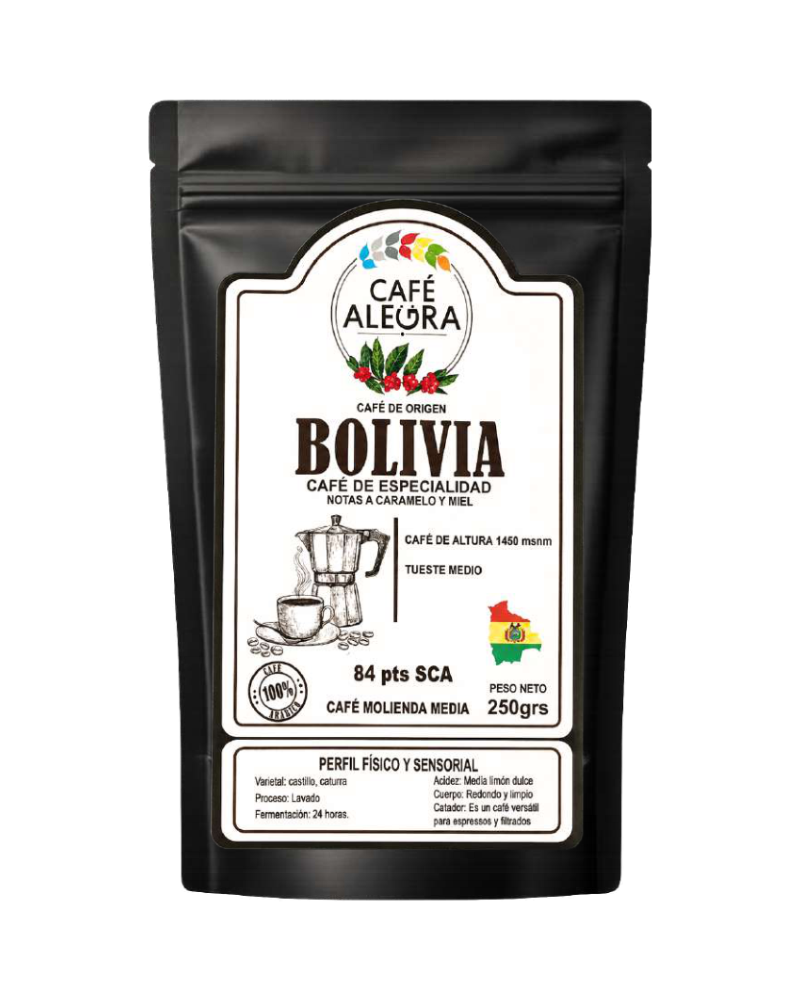

Inicio Café de especialidad Bolivia
CAFÉ DE ESPECIALIDAD · ORIGEN ÚNICO (84 SCA)Café de Especialidad Bolivia
Desde las montañas de Caranavi en los Yungas bolivianos, un café de altura con notas dulces de caramelo, miel y sutil limón dulce.

Café de Especialidad Bolivia Caranavi (84 SCA)
Un café de altura proveniente de Caranavi, en los Yungas bolivianos, que destaca por su cuerpo redondo y su perfil de dulzor agradable, con notas de caramelo y miel. Su acidez media, con matices de limón dulce, aporta frescura y equilibrio. El tueste medio suave acompaña su carácter sensorial, ofreciendo una taza especialmente apropiada para preparaciones de espresso y cafetera italiana.
Tueste: Medio suave
Información técnica
| Origen | Caranavi, Los Yungas, La Paz, Bolivia |
|---|---|
| Varietal | Castillo y Caturra |
| Notas | Caramelo y miel |
| Altura | 1.450 msnm |
| Tueste | Medio suave |
| Proceso | Lavado con fermentación de 24 horas |
| Acidez | Media, con matices de limón dulce |
| Cuerpo | Redondo |
| Formato | 250 g |
| Precio | $12.000 |
| Puntaje SCA | 84 puntos |
Cómo prepararlo
Ideal para espresso y cafetera italiana (moka).
Envíos
Despachos a todo Chile mediante Blue Express. Las tarifas de envío se calculan según región y comuna en el checkout. No aplica despacho gratuito.